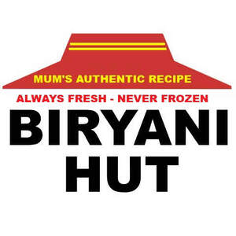

Trade Mark Journal No.2025/022 30 May 2025
UK00004202543 13 May 2025 (35,43)

- Class 35
- Business management of restaurants; Marketing services in the field of restaurants; Restaurant management for others; Business advisory services relating to the running of restaurants; Business operation of shopping malls; Business management assistance in the establishment and operation of restaurants; Business management assistance in the operation of restaurants; Business advisory services relating to the setting up of restaurants; Business management for shops; Online ordering services in the field of restaurant take-out and delivery; Retail services and social media advertisement relating to food and catering accessories online.
- Class 43
- Sushi restaurant services; Fast-food restaurant services; Hotel restaurant services; Take-out restaurant services; Restaurant and bar services; Bar and restaurant services; Take-away restaurant services; Restaurant services; Carvery restaurant services; Ramen restaurant services; Salad bars [restaurant services]; Tempura restaurant services; Restaurant reservation services; Washoku restaurant services; Restaurants; Carry-out restaurants; Japanese restaurant services; Self-service restaurant services; Mobile restaurant services; Grill restaurants; Spanish restaurant services; Reservation of restaurants; Booking of restaurant seats; Udon and soba restaurant services; Serving food and drink for guests in restaurants; Catering in fast-food cafeterias; Serving food and drink in restaurants and bars; Restaurants (Self-service -); Self-service restaurants; Restaurant services for the provision of fast food; Tourist restaurants; Bistro services; Fast food restaurants; Restaurant services incorporating licensed bar facilities; Delicatessens [restaurants]; Providing food and drink for guests in restaurants; Provision of food and drink in restaurants; Providing restaurant services; Eateries; Restaurant information services; Providing food and drink in restaurants and bars; Catering of food and drinks; Food and drink catering for banquets; Catering (Food and drink -); Food and drink catering; Catering of food and drink; Serving food and drink in doughnut shops; Brasserie services; Restaurant services provided by hotels; Reservation and booking services for restaurants and meals; Cafe services; Hotel catering services; Food and drink catering for institutions; Hotel reservations; Agency services for reservation of restaurants; Providing food and drink in bistros; Serving food and drink in Internet cafes; Takeaway food and drink services; Take-away food and drink services; Food and drink catering for cocktail parties; Cocktail lounge buffets; Take-away food services; Takeaway food services; Serving food and drink for guests; Resort hotel services; Making reservations and bookings for restaurants and meals; Serving food and drinks; Providing food and drink in doughnut shops; Catering for the provision of food and drink; Catering services for company cafeterias; Reservation of hotel accommodation; Hotel reservation services; Café services; Take-away fast food services; Hospitality services [food and drink]; Hotel accommodation reservation services; Providing reviews of restaurants and bars; Providing hotel and motel services; Providing food and drink catering services for exhibition facilities; Guesthouse; Providing room reservation and hotel reservation services; Catering for the provision of food and beverages; Corporate hospitality (provision of food and drink); Providing food and drink in Internet cafes; Snack bar services; Catering services for providing European-style cuisine; Consultancy services in the field of food and drink catering; Pizza parlors; Catering services for the provision of food and drink; Tapas bars; Providing reviews of restaurants; Rental of dishes; Club services for the provision of food and drink; Providing food and drink catering services for convention facilities; Catering services for providing Japanese cuisine; Coffee bar services; Providing food and drink for guests; Hookah bar services; Hotel room booking services; Hotel accommodation services; Catering; Providing food and drink catering services for fair and exhibition facilities; Self-service cafeteria services; Night club services [provision of food]; Catering services for providing Spanish cuisine; Private members dining club services; Cafeteria services; Preparation of food and beverages; Food preparation services; Provision of food and beverages; Services for the preparation of food and drink; Food and drink preparation services; Takeaway services; Provision of food and drink; Preparation and provision of food and drink for immediate consumption; Food reviewing services [provision of information about food and drinks]; Preparation of food and drink; Catering services for the provision of food; Preparation of Japanese food for immediate consumption; Services for the provision of food and drink; Office catering services for the provision of coffee; Providing of food and drink via a mobile truck; Take away food and drink services; Mobile catering; Coffee shops; Coffee shop services; Cafeterias; Snackbars; Providing of food and drink; Providing food and drink; Food preparation; Providing food and beverages; Preparation of Spanish food for immediate consumption; Services for providing food and drink. .
Inshiya Rambhia